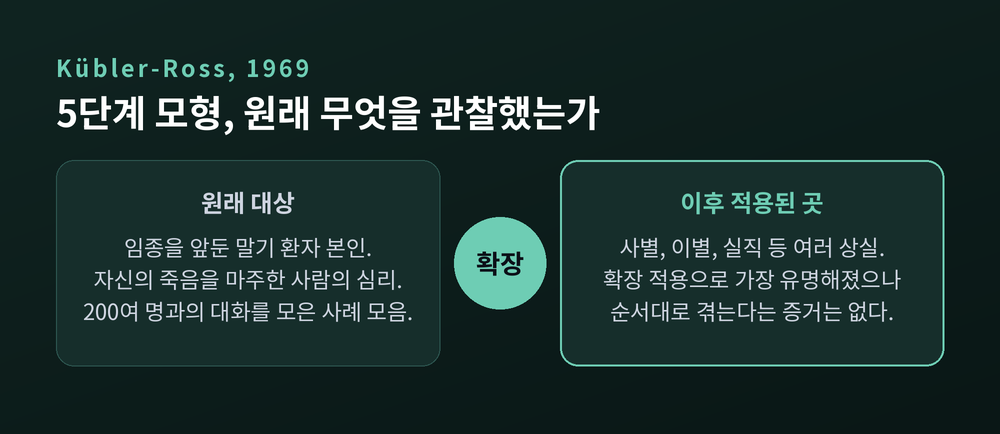
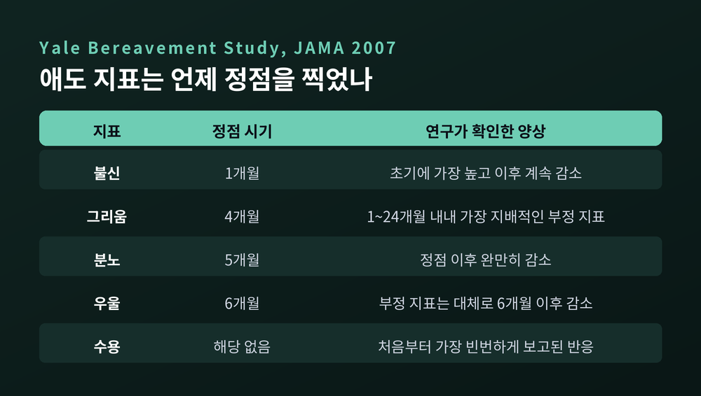
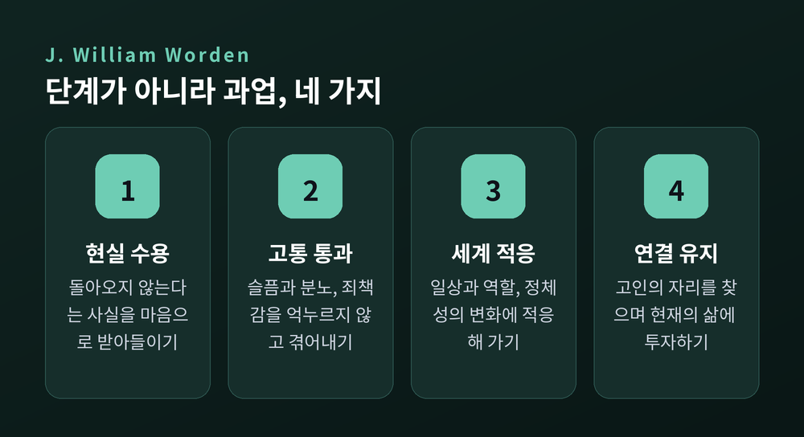
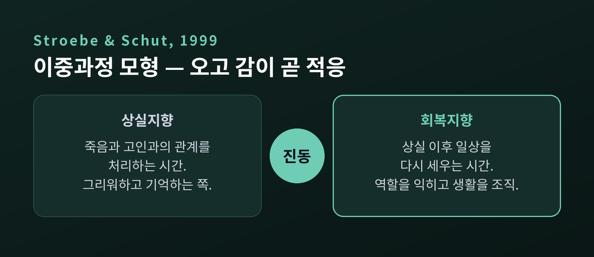
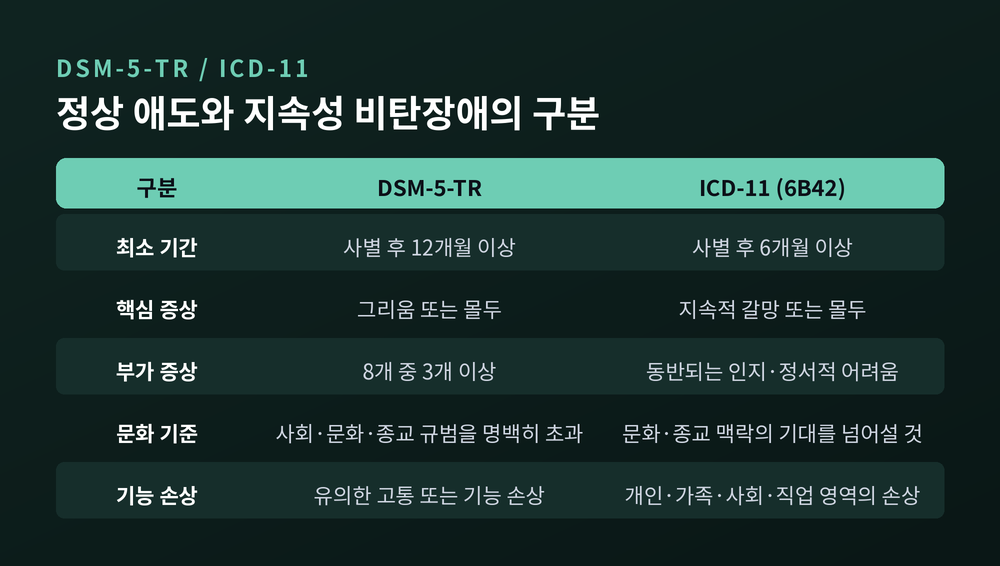
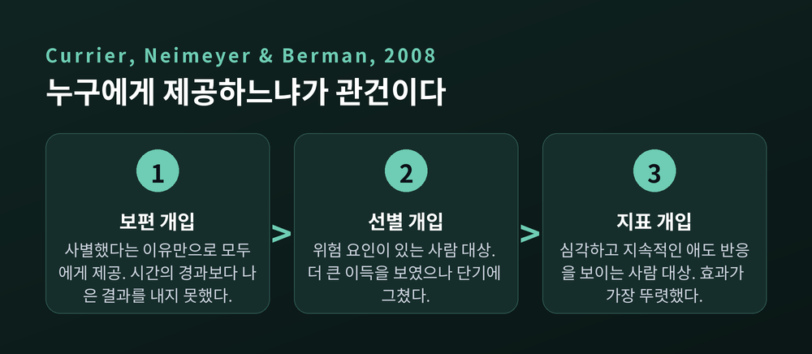

애도 상담의 원리, 상실 이후의 마음은 어떤 경로를 지나는가
퀴블러-로스 5단계 모형의 한계부터 워든의 애도 과업, 스트로베와 슈트의 이중과정 모형, 지속적 유대, 지속성 비탄장애의 구분 기준까지
이번 글에서는 애도 상담이 상실 이후의 마음을 어떻게 이해하는지 정리해 보겠습니다. 널리 알려진 다섯 단계 이야기에서 출발해, 그 모형이 실증 연구에서 어떤 반박을 받았고 그 자리를 무엇이 대신했는지 차례로 살펴보려 합니다.
먼저 결론을 세 줄로 앞세우겠습니다. 애도는 정해진 단계를 순서대로 통과하는 일이 아니며, 그 점은 여러 연구에서 확인됐습니다. 지금의 애도 상담은 상실을 마주하는 시간과 일상을 복구하는 시간 사이를 오가는 움직임에 주목합니다. 그리고 사별한 모든 사람에게 상담이 필요한 것은 아닙니다.

다섯 단계라는 지도는 어디서 왔는가
부정, 분노, 타협, 우울, 수용. 머리글자를 따 DABDA라고 부르는 이 순서는 엘리자베스 퀴블러-로스가 1969년 저서 『On Death and Dying』에서 제시했습니다.
한 가지를 먼저 짚어야 합니다. 이 모형이 관찰한 대상은 사별한 사람이 아니었습니다. 임종을 앞둔 말기 환자 본인이었습니다. 자신의 다가오는 죽음을 마주한 사람이 어떤 심리를 지나는지를 기술한 것입니다.
근거의 성격도 분명히 해 둘 필요가 있습니다. 체계적이고 실증적인 조사가 아니라, 이백 명이 넘는 임종 환자와 나눈 대화를 모은 사례 모음에 가까웠습니다.
이후 퀴블러-로스 본인과 다른 사람들이 이 틀을 사별, 이별, 실직 등 여러 상실 맥락으로 옮겨 적용했습니다. 대중적으로 가장 유명해진 심리 모형이 된 것도 이 확장 덕분입니다.
다만 퀴블러-로스 자신은 강연과 수업에서 같은 경고를 반복했다고 전해집니다. 이 단계들로 환자와 가족을 분류하거나 칸에 가두지 말라는 것이었습니다.

예일 사별 연구가 실제로 확인한 것
단계 이론을 정면으로 검증한 연구가 있습니다. 마치예프스키와 프리거슨 연구진이 2007년 『JAMA』에 발표한 「애도 단계 이론에 대한 실증적 검토」입니다. 흔히 예일 사별 연구로 불립니다.
설계는 이렇습니다. 미국 코네티컷의 사별자 233명을 2000년 1월부터 2003년 1월까지 모집해, 사별 후 1개월부터 24개월까지 추적했습니다. 측정한 지표는 다섯 가지였습니다. 불신, 그리움, 분노, 우울, 수용입니다.
결과는 단계 순서와 맞지 않았습니다. 불신은 1개월 시점이 가장 높고 이후 계속 줄었습니다. 그리움은 4개월, 분노는 5개월, 우울은 6개월에 정점을 찍었습니다.
정작 결정적인 것은 두 가지였습니다. 수용은 처음부터 가장 빈번하게 보고된 반응이었습니다. 그리고 1개월부터 24개월까지 내내 가장 지배적인 부정적 지표는 그리움이었습니다.
수용이 마지막에 도착하는 종착지가 아니라 시작부터 함께 있었다는 뜻입니다.

이 연구 하나만의 이야기는 아닙니다. 단계 모형을 향한 비판은 크게 두 갈래로 모입니다. 그런 단계가 실재한다는 것이 입증된 적이 없다는 점, 그리고 사람들이 1단계에서 5단계로 순서대로 이동한다는 증거가 제시된 적이 없다는 점입니다.
지금 학계의 평가는 조심스럽지만 일관됩니다. 역사적 가치는 인정하되, 과학적·임상적으로는 낡은 틀로 봅니다.
실무에서의 해악도 분명합니다. 단계 도식은 "이 순서대로 겪어야 한다"는 기대를 만듭니다. 그 기대에 맞지 않는 사람은 자신이 잘못 애도하고 있다고 느끼게 됩니다.
단계가 아니라 과업 — 워든의 네 가지
윌리엄 워든은 다른 단어를 씁니다. 단계(stage)가 아니라 과업(task)입니다.
이 차이가 생각보다 큽니다. 단계는 수동적으로 통과하는 것이고, 과업은 애도하는 사람이 능동적으로 해내는 일입니다. 애도자를 구경꾼이 아니라 참여자의 자리에 놓습니다.
네 가지는 이렇습니다.
- 상실의 현실을 받아들이기 — 그 사람이 죽었고 돌아오지 않는다는 사실을 머리로도 마음으로도 받아들이는 일
- 애도의 고통을 통과하기 — 슬픔, 분노, 죄책감, 외로움을 억누르지 않고 겪고 표현하는 일
- 고인이 없는 세계에 적응하기 — 일상과 역할, 관계, 그리고 자기 정체성의 변화에 적응하는 일
- 지속적 연결을 찾으면서 삶을 이어 가기 — 고인이 마음속에 놓일 적절한 자리를 찾는 동시에 현재의 삶에 다시 투자하는 일
순서는 정해져 있지 않습니다. 과업은 겹치기도 하고, 이미 지났다고 생각한 자리로 되돌아가기도 합니다. 기한도 없습니다. 다만 며칠이나 몇 주가 아니라 몇 달에서 몇 년 단위로 일어나는 일이라고 봅니다.
네 번째 과업은 원래 이런 형태가 아니었습니다. 초기 판본은 고인에게서 정서적 에너지를 거두어 다른 관계에 재투자하는 쪽에 가까웠습니다. 이후 개정에서 연결을 유지하며 살아가는 형태로 바뀌었습니다.

진동 — 이중과정 모형이 본 움직임
마거릿 스트로베와 헹크 슈트가 1999년 『Death Studies』에 발표한 이중과정 모형은 애도를 두 종류의 부담으로 나눕니다.
상실지향 부담은 죽음 자체와 고인과의 관계를 처리하는 일입니다. 옛 사진을 들여다보고, 그리워하고, 기억하고, 그 사람이라면 뭐라고 했을지 상상하는 시간이 여기 속합니다.
회복지향 부담은 상실 이후 일상으로 돌아가는 과정에서 생깁니다. 고인이 맡던 일을 대신하고, 새 역할을 익히고, 생활을 다시 조직하는 시간입니다.
이 모형의 핵심은 둘 중 어느 쪽이 옳으냐가 아닙니다. 둘 사이를 오가는 움직임 자체입니다. 연구자들은 이것을 진동(oscillation)이라고 불렀습니다.
건강한 애도는 때로 마주하고 때로 피합니다. 슬픔에 잠기는 날이 있고, 서류를 정리하고 장을 보는 날이 있습니다. 어느 한쪽에만 머무르지 않는 왕복이 적응의 기제라는 것입니다.
모형은 애도에서 잠시 벗어나 쉬는 시간도 명시적으로 포함합니다. 사별과 무관한 일을 하며 그저 쉬고 회복하는 구간입니다. 이것을 죄책감의 근거로 삼을 필요가 없다는 뜻이기도 합니다.
두 지향 사이를 유연하게 오가지 못하고 필요한 휴지기를 갖지 못할 때, 애도의 합병증 위험이 높아진다고 봅니다.

한계도 함께 적어 둡니다. 상실지향과 회복지향, 진동을 측정하기 위한 도구가 개발되어 신뢰할 만한 속성을 보였고 적응적 진동이 애도의 심각도를 완충한다는 결과도 보고됐습니다. 다만 진동 과정 자체는 아직 충분히 이해되거나 측정되지 못했다는 점을 연구자들도 함께 인정합니다.
유대를 끊어야 한다는 전제가 바뀐 자리
예전에는 애도의 목표가 고인과의 유대를 끊는 것이었습니다. 지금은 그렇게 보지 않습니다.
20세기의 지배적 모형은 분명했습니다. 애도의 기능은 고인과의 결속을 끊는 것이고, 그래야 남은 사람이 새 관계에 다시 투자할 수 있다고 보았습니다. 따라서 고인을 붙잡고 있는 상태가 곧 병리적 애도로 정의됐습니다.
데니스 클래스와 필리스 실버먼, 스티븐 닉먼이 1996년 편저 『Continuing Bonds』에서 이 전제를 정면으로 되물었습니다. 이 모형은 사람들이 실제로 무엇을 하는지에 대한 자료보다 근대의 문화적 가치에 더 기대고 있다는 것이 이들의 지적이었습니다.
출발점은 관찰이었습니다. 실버먼은 사별한 아동들이 돌아가신 부모와 내적 관계를 유지한다는 것을 확인했습니다. 닉먼은 입양인 연구에서 지속되는 연결을 발견했습니다. 이런 결과들이 모여 하나를 드러냈습니다. 지속적 유대는 예외가 아니라 흔한 일이라는 것입니다.
다만 여기서 한 걸음 더 나가야 합니다. 유대를 유지하면 무조건 좋다는 이야기가 아니기 때문입니다.
후속 연구는 유대를 내면화된 형태와 외현화된 형태로 구분했습니다. 고인을 안전한 기반으로 마음에 품는 쪽과, 고인에 대한 환각이나 착각으로 나타나는 쪽입니다. 2023년 체계적 문헌고찰은 더 신중한 그림을 보여 줍니다. 두 표현 모두 더 심한 애도 증상과 연관된 바 있고, 동시에 내면화된 유대는 적응적 반응이나 성장과도 연관됐습니다.
그래서 판단의 기준은 형태 하나가 아닙니다. 그 연결을 본인이 어떻게 해석하는지, 그리고 시간이 지나며 어떻게 달라지는지를 함께 봅니다. 유대의 표현은 대체로 외현화에서 더 내면화되고 유연한 형태로 변해 갑니다.
정상 애도와 지속성 비탄장애를 가르는 기준
애도가 길다는 이유만으로 장애가 되지는 않습니다. 구분 기준은 기간 하나가 아니라 세 가지입니다.

DSM-5-TR은 사별 후 12개월 이상을 최소 기간으로 둡니다. ICD-11은 6개월 이상입니다. 핵심 증상은 양쪽 모두 고인에 대한 지속적 그리움 또는 몰두입니다. DSM-5-TR은 여기에 여덟 가지 부가 증상 중 셋 이상을 요구합니다. 자기 일부가 함께 죽은 듯한 정체성 붕괴, 죽음에 대한 뚜렷한 불신, 상기시키는 것의 회피, 강한 정서적 고통, 관계와 활동으로의 재통합 곤란, 정서적 마비, 삶이 무의미하다는 느낌, 강한 외로움입니다.
두 번째 기준이 중요합니다. 사회적·문화적·종교적 규범을 명백히 초과해야 합니다. ICD-11의 표현은 더 직접적입니다. 개인의 문화와 종교적 맥락에서 정상적인 애도 기간 안에 있는 긴 애도 반응은 정상 사별 반응으로 보며 진단하지 않습니다.
세 번째는 기능 손상입니다. 개인, 가족, 사회, 교육, 직업 영역에서 유의한 손상이 있어야 합니다.
유병률은 기준에 따라 달라집니다. 2017년 메타분석은 비폭력적 사별을 겪은 성인에서 통합 유병률을 9.8퍼센트로 보고했습니다. 다만 연구 간 이질성이 높고 대표성이 제한적이라는 점을 저자들이 함께 밝혔습니다. 기준별로 비교한 연구에서는 4.7에서 6.8퍼센트 범위가 나왔고, DSM-5-TR 기준의 유병률이 ICD-11보다 유의하게 낮았습니다. 12개월과 6개월이라는 기준 차이가 주된 이유입니다. 유병률이 과대 추정되어 왔다는 문제 제기도 최근 나옵니다.
수치를 하나로 단정하기 어렵다는 것이 지금의 솔직한 상태입니다.
대부분은 스스로 지나간다 — 궤적 연구가 보여 준 것
조지 보나노 연구진의 연구는 설계가 남다릅니다. 배우자 사망 이전 수년 전부터 자료를 모아 두고, 사별 후 6개월과 18개월에 다시 측정했습니다. 참가자는 205명이었습니다. 사별 전 상태를 알기 때문에 경로 자체를 추정할 수 있습니다.
결과는 이렇습니다. 회복탄력 패턴이 45.9퍼센트로 가장 흔했습니다. 만성 애도 패턴은 15.6퍼센트였습니다.
연구진은 다섯 가지 사별 패턴을 제시했습니다. 일반적 애도, 만성 애도, 만성 우울, 사별 중 호전, 회복탄력입니다. 예측 요인도 확인됐습니다. 만성 애도는 사별 전 의존성과, 회복탄력은 사별 전 죽음에 대한 수용과 연관됐습니다.
더 넓게 보면 54개 연구를 모은 메타분석에서 잠재적 외상 사건을 겪은 사람의 65퍼센트가 정신병리 증상이 거의 또는 전혀 없는 경로를 보였습니다.
애도의 경로는 하나가 아니라는 것입니다.
모두에게 상담이 필요하지는 않습니다
애도 상담 분야에서 가장 뼈아프게 받아들여진 결과가 여기 있습니다.
커리어와 나이마이어, 버먼이 2008년 『Psychological Bulletin』에 발표한 메타분석은 통제된 연구 61편을 종합했습니다. 무작위 연구의 효과크기는 d = 0.16이었습니다. 작지만 유의한 수준입니다. 비무작위 연구에서는 d = 0.51로 중간 수준이었습니다. 개입은 처치 직후에 작은 효과를 보였고, 추적 시점에서는 통계적으로 유의한 이득이 없었습니다.
가장 중요한 대목은 대상별 차이였습니다. 사별했다는 이유만으로 모두에게 제공한 보편적 개입은 단순한 시간의 경과보다 나은 결과를 내지 못했습니다.
이유는 비관적이지 않습니다. 대부분의 사람은 상실에 적응할 회복탄력성과 사회적·가족적 지지를 이미 갖고 있기 때문입니다.

위험 요인이 있는 사람을 대상으로 한 선별적 개입은 더 큰 이득을 보였습니다. 다만 그 이득도 단기에 그쳤습니다. 효과가 가장 뚜렷했던 것은 실제로 심각하고 지속적인 애도 반응을 보이는 사람을 대상으로 한 개입이었습니다.
이 결론이 학계의 합의는 아니라는 점도 적어 둡니다. 나이마이어는 정상 사별에 대한 개입이 대체로 효과가 없다고 보지만, 애도 상담이 일반 심리치료와 유사한 수준의 효과를 보인다고 반박하는 연구자들도 있습니다.
반면 문제가 분명할 때의 치료 효과는 양쪽 모두 인정합니다. 캐서린 시어 연구진이 2005년 『JAMA』에 발표한 무작위 대조시험이 이 상태에 대한 첫 실증 검증 치료가 됐습니다. 복합성 애도 치료는 대인관계치료와 외상후스트레스장애 치료에서 요소를 가져왔습니다. 애도에도 불신과 침습적 심상, 회피 행동이 나타나기 때문입니다.
16회기 프로토콜은 일곱 가지 주제를 다룹니다. 애도 이해하기, 고통스러운 감정 다루기, 미래 생각하기, 관계 강화하기, 죽음의 이야기 말하기, 상기물과 함께 사는 법 배우기, 고인 기억하기입니다. 무작위 대조시험에서 이 치료를 받은 집단은 대인관계치료 집단보다 증상이 유의하게 더 호전됐고 반응도 더 빨랐습니다. 여러 연구를 종합하면 지속성 비탄을 겪는 사람의 약 70퍼센트가 호전됩니다.
정리하면 관건은 개입을 제공하느냐가 아닙니다. 누구에게 제공하느냐입니다.
의례가 하는 일
문화와 종교에 따라 상실 이후의 의례는 매우 다릅니다. 그런데 그 효과의 바탕에 공통된 기제가 있을 수 있다는 연구가 있습니다.
마이클 노튼과 프란체스카 지노가 2014년 발표한 연구입니다. 과거의 의례를 떠올리게 하거나 새로 고안한 의례를 수행하도록 배정한 참가자들이 더 낮은 수준의 애도를 보고했습니다.
기제는 통제감이었습니다. 의례 이후 높아진 통제감이 의례 사용과 애도 감소 사이를 매개했습니다. 흥미로운 점은 효과를 믿는다고 밝힌 사람뿐 아니라 믿지 않는 사람에게도 나타났다는 것입니다.
연구자들의 해석은 담백합니다. 어떤 종류의 의례인지, 그 효과를 믿는지 여부는 크게 중요하지 않아 보인다는 것입니다.
진단 기준에 문화 조항이 들어 있는 이유도 여기서 이어집니다. 어떤 문화에서는 수년간 이어지는 애도 표현이 규범입니다. 규범 안에 있는 애도는 장애가 아닙니다. 난민과 실향민 집단을 위한 별도의 척도 부록이 개발되고 있다는 사실도 같은 필요를 가리킵니다.
끝으로 한 마디만 더 드리겠습니다.
애도 상담의 원리를 한 줄로 줄이면 이렇게 됩니다. "애도에는 정답 경로가 없고, 필요한 것은 통과가 아니라 오고 감입니다."
지금까지 본 이론들은 서로 다른 언어를 쓰지만 한 방향을 가리킵니다. 단계를 통과하라고 하지 않습니다. 과업을 오가고, 마주함과 물러남을 반복하고, 끊지 않은 연결과 함께 살아가는 쪽을 봅니다.
한 가지는 분명히 덧붙이겠습니다. 상실 이후의 시간이 길어지는 것 자체는 이상한 일이 아닙니다. 다만 일상 기능이 오래 어렵거나 스스로 감당하기 힘든 상태가 이어진다면, 정신건강 전문가나 전문 상담기관의 도움을 받으시길 권합니다. 앞서 본 대로 심각하고 지속적인 애도에는 효과가 확인된 치료가 있습니다. 이 글은 이해를 돕기 위한 일반적 정보이며 진단이나 치료를 대신하지 않습니다.
언제쯤 괜찮아지느냐고 물으신다면, 괜찮아진다는 말의 뜻이 먼저 달라진다고 답하겠습니다. 잊는 일이 아니라, 함께 살아가는 법을 배우는 일에 가깝습니다.